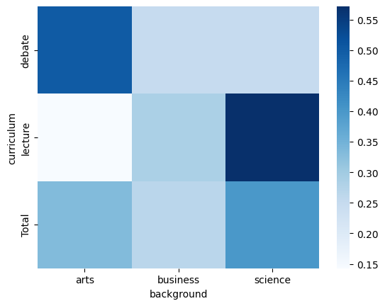
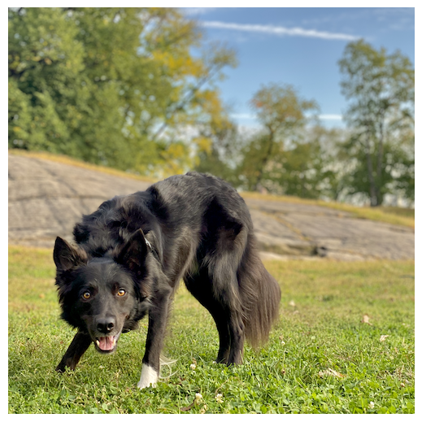
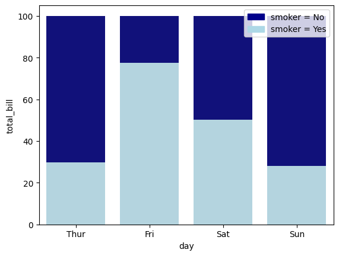
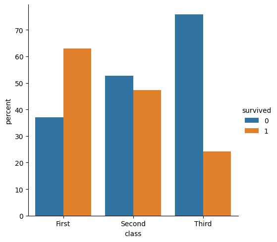
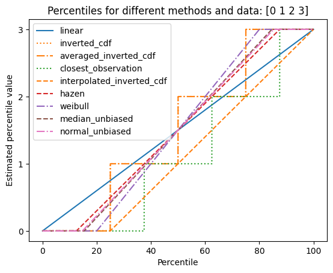
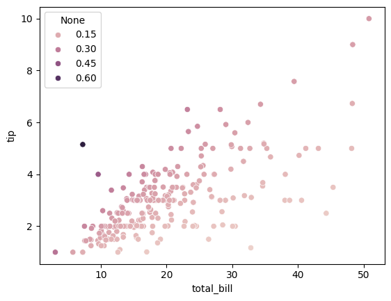
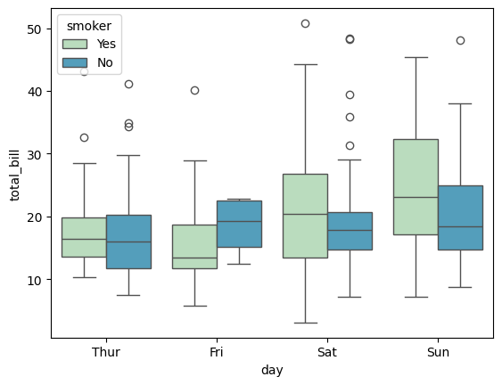

CUT MATERIAL from descriptive statistics#
(DEPRECATED) leftovers from working on the descriptive statistics notebook
see notebooks/13_descriptive_statistics.ipynb for clean version
see figures_generation/descr_stats.ipynb for code to generate figs
Notebooks setup#
import numpy as np
import pandas as pd
import matplotlib.pyplot as plt
import seaborn as sns
# Pandas setup
pd.set_option("display.precision", 2)
Data#
#@title Load CSV data
import io
data_file = io.StringIO("""
student_ID,background,curriculum,effort,score
1,arts,debate,10.96,75
2,science,lecture,8.69,75
3,arts,debate,8.6,67
4,arts,lecture,7.92,70.3
5,science,debate,9.9,76.1
6,business,debate,10.8,79.8
7,science,lecture,7.81,72.7
8,business,lecture,9.13,75.4
9,business,lecture,5.21,57
10,science,lecture,7.71,69
11,business,debate,9.82,70.4
12,arts,debate,11.53,96.2
13,science,debate,7.1,62.9
14,science,lecture,6.39,57.6
15,arts,debate,12,84.3
""")
students = pd.read_csv(data_file, index_col="student_ID")
students
| background | curriculum | effort | score | |
|---|---|---|---|---|
| student_ID | ||||
| 1 | arts | debate | 10.96 | 75.0 |
| 2 | science | lecture | 8.69 | 75.0 |
| 3 | arts | debate | 8.60 | 67.0 |
| 4 | arts | lecture | 7.92 | 70.3 |
| 5 | science | debate | 9.90 | 76.1 |
| 6 | business | debate | 10.80 | 79.8 |
| 7 | science | lecture | 7.81 | 72.7 |
| 8 | business | lecture | 9.13 | 75.4 |
| 9 | business | lecture | 5.21 | 57.0 |
| 10 | science | lecture | 7.71 | 69.0 |
| 11 | business | debate | 9.82 | 70.4 |
| 12 | arts | debate | 11.53 | 96.2 |
| 13 | science | debate | 7.10 | 62.9 |
| 14 | science | lecture | 6.39 | 57.6 |
| 15 | arts | debate | 12.00 | 84.3 |
students['score'].kurtosis()
1.2432566126891702
students['score'].skew()
0.5777104618591472
CUT MATERIAL#
pd.pivot_table(
data=students,
index="curriculum",
columns="background",
values="score", # dummy placeholder
aggfunc="count",
fill_value=0,
margins=True,
)
| background | arts | business | science | All |
|---|---|---|---|---|
| curriculum | ||||
| debate | 4 | 2 | 2 | 8 |
| lecture | 1 | 2 | 4 | 7 |
| All | 5 | 4 | 6 | 15 |
# equivalent using groupby + multiindex
students.groupby(["curriculum", "background"])["background"].count().unstack().fillna(0)
| background | arts | business | science |
|---|---|---|---|
| curriculum | |||
| debate | 4 | 2 | 2 |
| lecture | 1 | 2 | 4 |
sns.heatmap(
pd.crosstab(
index=students["curriculum"],
columns=students["background"],
margins=True,
normalize="index",
margins_name="Total",
),
cmap="Blues"
)
<Axes: xlabel='background', ylabel='curriculum'>

sns.dogplot()

# import libraries
import seaborn as sns
import numpy as np
import matplotlib.pyplot as plt
import matplotlib.patches as mpatches
# load dataset
tips = sns.load_dataset("tips")
# set the figure size
# plt.figure(figsize=(14, 14))
# from raw value to percentage
total = tips.groupby('day')['total_bill'].sum().reset_index()
smoker = tips[tips.smoker=='Yes'].groupby('day')['total_bill'].sum().reset_index()
smoker['total_bill'] = [i / j * 100 for i,j in zip(smoker['total_bill'], total['total_bill'])]
total['total_bill'] = [i / j * 100 for i,j in zip(total['total_bill'], total['total_bill'])]
# bar chart 1 -> top bars (group of 'smoker=No')
bar1 = sns.barplot(x="day", y="total_bill", data=total, color='darkblue')
# bar chart 2 -> bottom bars (group of 'smoker=Yes')
bar2 = sns.barplot(x="day", y="total_bill", data=smoker, color='lightblue')
# add legend
top_bar = mpatches.Patch(color='darkblue', label='smoker = No')
bottom_bar = mpatches.Patch(color='lightblue', label='smoker = Yes')
plt.legend(handles=[top_bar, bottom_bar])
# show the graph
plt.show()
/tmp/ipykernel_7054/2386064979.py:14: FutureWarning: The default of observed=False is deprecated and will be changed to True in a future version of pandas. Pass observed=False to retain current behavior or observed=True to adopt the future default and silence this warning.
total = tips.groupby('day')['total_bill'].sum().reset_index()
/tmp/ipykernel_7054/2386064979.py:15: FutureWarning: The default of observed=False is deprecated and will be changed to True in a future version of pandas. Pass observed=False to retain current behavior or observed=True to adopt the future default and silence this warning.
smoker = tips[tips.smoker=='Yes'].groupby('day')['total_bill'].sum().reset_index()

df = sns.load_dataset('titanic')
(df
.groupby('class')['survived']
.value_counts(normalize=True)
.mul(100)
.rename('percent')
.reset_index()
.pipe((sns.catplot, 'data'), x='class', y='percent', hue='survived', kind='bar')
)
/tmp/ipykernel_7054/2575844262.py:4: FutureWarning: The default of observed=False is deprecated and will be changed to True in a future version of pandas. Pass observed=False to retain current behavior or observed=True to adopt the future default and silence this warning.
.groupby('class')['survived']
<seaborn.axisgrid.FacetGrid at 0x7f58475e6b90>

import matplotlib.pyplot as plt
a = np.arange(4)
p = np.linspace(0, 100, 6001)
ax = plt.gca()
lines = [
('linear', '-', 'C0'),
('inverted_cdf', ':', 'C1'),
# Almost the same as `inverted_cdf`:
('averaged_inverted_cdf', '-.', 'C1'),
('closest_observation', ':', 'C2'),
('interpolated_inverted_cdf', '--', 'C1'),
('hazen', '--', 'C3'),
('weibull', '-.', 'C4'),
('median_unbiased', '--', 'C5'),
('normal_unbiased', '-.', 'C6'),
]
for method, style, color in lines:
ax.plot(
p, np.percentile(a, p, method=method),
label=method, linestyle=style, color=color
)
ax.set(
title='Percentiles for different methods and data: ' + str(a),
xlabel='Percentile',
ylabel='Estimated percentile value',
yticks=a
)
ax.legend()
plt.show()

import numpy as np
tips = sns.load_dataset("tips")
tip_rate = tips.eval("tip / total_bill")
ax = sns.scatterplot(data=tips, x="total_bill", y="tip", hue=tip_rate)

tips.assign(tip_rate=tips.eval("tip / total_bill"))
| total_bill | tip | sex | smoker | day | time | size | tip_rate | |
|---|---|---|---|---|---|---|---|---|
| 0 | 16.99 | 1.01 | Female | No | Sun | Dinner | 2 | 0.06 |
| 1 | 10.34 | 1.66 | Male | No | Sun | Dinner | 3 | 0.16 |
| 2 | 21.01 | 3.50 | Male | No | Sun | Dinner | 3 | 0.17 |
| 3 | 23.68 | 3.31 | Male | No | Sun | Dinner | 2 | 0.14 |
| 4 | 24.59 | 3.61 | Female | No | Sun | Dinner | 4 | 0.15 |
| ... | ... | ... | ... | ... | ... | ... | ... | ... |
| 239 | 29.03 | 5.92 | Male | No | Sat | Dinner | 3 | 0.20 |
| 240 | 27.18 | 2.00 | Female | Yes | Sat | Dinner | 2 | 0.07 |
| 241 | 22.67 | 2.00 | Male | Yes | Sat | Dinner | 2 | 0.09 |
| 242 | 17.82 | 1.75 | Male | No | Sat | Dinner | 2 | 0.10 |
| 243 | 18.78 | 3.00 | Female | No | Thur | Dinner | 2 | 0.16 |
244 rows × 8 columns
import seaborn as sns
# load the dataframe
tips = sns.load_dataset('tips')
ax = sns.boxplot(x="day", y="total_bill", hue="smoker", data=tips, palette="GnBu", zorder=0)
# add stripplot with dodge=True
sns.stripplot(x="day", y="total_bill", hue="smoker", data=tips, palette="GnBu",
dodge=True, ax=ax, ec='k', linewidth=1, alpha=0.6)
# remove extra legend handles
handles, labels = ax.get_legend_handles_labels()
ax.legend(handles[:2], labels[:2], title='Smoker', bbox_to_anchor=(1, 1.02), loc='upper left')
---------------------------------------------------------------------------
TypeError Traceback (most recent call last)
Cell In[17], line 9
6 ax = sns.boxplot(x="day", y="total_bill", hue="smoker", data=tips, palette="GnBu", zorder=0)
8 # add stripplot with dodge=True
----> 9 sns.stripplot(x="day", y="total_bill", hue="smoker", data=tips, palette="GnBu",
10 dodge=True, ax=ax, ec='k', linewidth=1, alpha=0.6)
12 # remove extra legend handles
13 handles, labels = ax.get_legend_handles_labels()
File /opt/hostedtoolcache/Python/3.10.18/x64/lib/python3.10/site-packages/seaborn/categorical.py:2119, in stripplot(data, x, y, hue, order, hue_order, jitter, dodge, orient, color, palette, size, edgecolor, linewidth, hue_norm, log_scale, native_scale, formatter, legend, ax, **kwargs)
2111 size = kwargs.get("s", size)
2113 kwargs.update(
2114 s=size ** 2,
2115 edgecolor=edgecolor,
2116 linewidth=linewidth,
2117 )
-> 2119 p.plot_strips(
2120 jitter=jitter,
2121 dodge=dodge,
2122 color=color,
2123 plot_kws=kwargs,
2124 )
2126 # XXX this happens inside a plotting method in the distribution plots
2127 # but maybe it's better out here? Alternatively, we have an open issue
2128 # suggesting that _attach could add default axes labels, which seems smart.
2129 p._add_axis_labels(ax)
File /opt/hostedtoolcache/Python/3.10.18/x64/lib/python3.10/site-packages/seaborn/categorical.py:511, in _CategoricalPlotter.plot_strips(self, jitter, dodge, color, plot_kws)
508 sub_data[self.orient] = adjusted_data
509 self._invert_scale(ax, sub_data)
--> 511 points = ax.scatter(sub_data["x"], sub_data["y"], color=color, **plot_kws)
512 if "hue" in self.variables:
513 points.set_facecolors(self._hue_map(sub_data["hue"]))
File /opt/hostedtoolcache/Python/3.10.18/x64/lib/python3.10/site-packages/matplotlib/_api/deprecation.py:453, in make_keyword_only.<locals>.wrapper(*args, **kwargs)
447 if len(args) > name_idx:
448 warn_deprecated(
449 since, message="Passing the %(name)s %(obj_type)s "
450 "positionally is deprecated since Matplotlib %(since)s; the "
451 "parameter will become keyword-only in %(removal)s.",
452 name=name, obj_type=f"parameter of {func.__name__}()")
--> 453 return func(*args, **kwargs)
File /opt/hostedtoolcache/Python/3.10.18/x64/lib/python3.10/site-packages/matplotlib/__init__.py:1521, in _preprocess_data.<locals>.inner(ax, data, *args, **kwargs)
1518 @functools.wraps(func)
1519 def inner(ax, *args, data=None, **kwargs):
1520 if data is None:
-> 1521 return func(
1522 ax,
1523 *map(cbook.sanitize_sequence, args),
1524 **{k: cbook.sanitize_sequence(v) for k, v in kwargs.items()})
1526 bound = new_sig.bind(ax, *args, **kwargs)
1527 auto_label = (bound.arguments.get(label_namer)
1528 or bound.kwargs.get(label_namer))
File /opt/hostedtoolcache/Python/3.10.18/x64/lib/python3.10/site-packages/matplotlib/axes/_axes.py:4921, in Axes.scatter(self, x, y, s, c, marker, cmap, norm, vmin, vmax, alpha, linewidths, edgecolors, colorizer, plotnonfinite, **kwargs)
4918 if linewidths is not None:
4919 kwargs.update({'linewidths': linewidths})
-> 4921 kwargs = cbook.normalize_kwargs(kwargs, mcoll.Collection)
4922 # re direct linewidth and edgecolor so it can be
4923 # further processed by the rest of the function
4924 linewidths = kwargs.pop('linewidth', None)
File /opt/hostedtoolcache/Python/3.10.18/x64/lib/python3.10/site-packages/matplotlib/cbook.py:1800, in normalize_kwargs(kw, alias_mapping)
1798 canonical = to_canonical.get(k, k)
1799 if canonical in canonical_to_seen:
-> 1800 raise TypeError(f"Got both {canonical_to_seen[canonical]!r} and "
1801 f"{k!r}, which are aliases of one another")
1802 canonical_to_seen[canonical] = k
1803 ret[canonical] = v
TypeError: Got both 'ec' and 'edgecolor', which are aliases of one another

# Fancy descriptiv statistics
# import pandas_profiling
# students.profile_report()